소방설비기사(전기분야) (2008-03-02 기출문제)
1과목: 소방원론
1. 일반적인 자연발화의 방지법이 아닌 것은?
- 습도를 높일 것
- 통풍을 원화하게 하여 열축적을 방지할 것
- 저장실의 온도를 낮출 것
- 발열반응에 정촉매 작용을 하는 물질을 피할 것
(정답률: 84%)

2. 방화구조에 대한 기준으로 틀린 것은?
- 철망모르트르로서 그 바름두께가 2cm 이상인 것
- 두께 1.2m 이상의 석고판 위에 석면 시멘트판을 붙인 것
- 두께 2cm 이상의 양면보온판 위에 석면 시멘트판을 붙인 것
- 심벽에 흙으로 맞벽치기 한 것
(정답률: 40%)
3. 다음 중 연소를 위한 필수조건이 아닌 것은?
- 가연물
- 산소
- 점화에너지
- 부촉매
(정답률: 84%)
4. 이산화탄소소화설비의 적용대상으로 적당하지 않은 것은?
- 가솔린
- 전기설비
- 인화성 고체 위험물
- 니트로셀룰로오스
(정답률: 70%)
5. 건축물의 주요구조부가 아닌 것은>
- 차양
- 보
- 기둥
- 바닥
(정답률: 86%)
6. 다음 중 화재하중을 나타내는 단위는?
- kcal/kg
- ℃/m2
- kg/m2
- kg/kcal
(정답률: 83%)
7. 물과 반응하여 위험성이 높아지는 물질이 아닌 것은?
- 칼륨
- 니트로셀룰로오스
- 나트륨
- 수소화리튬
(정답률: 70%)
8. 에틸렌의 연소 생성물에 속하지 않는 것은? (단, 에틸렌의 일부는 불완전 연소된다고 가정한다.)
- 이산화탄소
- 일산화탄소
- 수증기
- 염화수소
(정답률: 53%)
9. 일반적으로 공기중 산소농도를 몇 vol% 이하로 감소시키면 연소상태의 중지 및 질식소화 가능하겠는가?
- 15
- 21
- 25
- 31
(정답률: 81%)
10. 가연물에 대한 일반적인 설명으로 옳은 것은?
- 산소와 반응시 흡열반응을 하는 것은 가연물이 될 수 없다.
- 구성원소 중 산소가 포함된 유기물은 가연물이 될 수 없다.
- 활성화에너지가 클수록 가연물이 되기 쉽다.
- 산소와 친화력이 작을수록 가연물이 되기 쉽다.
(정답률: 54%)
11. 산소를 함유하고 있어 공기 중의 산소가 없어도 자기연소가 가능한 곳은?
- 아황산탄소
- 톨루엔
- 크실렌
- 디니트로톨루엔
(정답률: 55%)
12. 이산화탄소나 질소의 농도가 높아지면 연소속도에 어떠한 영향을 미치는가?
- 연속속도가 빨라진다.
- 연속속도가 느려진다.
- 연속속도에는 변화가 없다.
- 처음에 느려지나 나중에는 빨라진다.
(정답률: 65%)
13. 인화점이 낮은 것부터 순서로 옳게 나열된 것은?
- 아세톤 < 이황화탄소 <에틸알콜
- 이황화탄소 < 에틸알콜 < 아세톤
- 에틸알콜 < 아세톤 < 이황화탄소
- 이황화탄소 < 아세톤< 에틸알콜
(정답률: 71%)
14. 건축물에 화재가 발생하여 일정 시간이 경과하게 되면 일정 공간 안에 열과 가연성 가스가 축적되고 한순간에 폭발적으로 화재가 확산되는 현상을 무엇이라 하는가?
- 보일오버현상
- 플래쉬오버현상
- 패닉현사
- 리프팅현상
(정답률: 88%)
15. 화재발생시 소화작업에 주로 물을 이용한다. 물을 이용하는 주된 목적은 무엇 때문인가?
- 가연물질을 제거하기 위해서
- 물의 증발잠열을 이용하기 위해서
- 상대적으로 물의 비중이 작기 때문에
- 물의 현열을 이용하기 위해서
(정답률: 90%)
16. 전기화재의 원인으로 가장 관계가 없는 것은?
- 단락
- 과전류
- 누전
- 절연 과다
(정답률: 77%)
17. 다음 연소에 관한 설명 중 틀린 것은?
- 알코올은 증발연소를 한다.
- 목재, 석탄은 분해연소를 한다.
- 고체의 표면에서 연소가 일어나는 경우 표면연소라 한다.
- 나트륨, 유황의 연소형태는 자기연소이다.
(정답률: 61%)
18. 갑작스런 화재 발생시 인간의 피난 특성으로 틀린 것은?
- 본능적으로 평상시 사용하는 출입구를 사용한다.
- 최초로 행동을 개시한 사람을 따라서 움직인다.
- 공포감으로 인해서 빛을 피하여 어두운 곳으로 몸을 숨긴다.
- 무의식 중에 발화 장소의 반대 쪽으로 이동한다.
(정답률: 88%)
19. 소화방법 중 제거 소화에 해당되지 않는 것은?
- 산불이 발생하면 화재의 진행방행을 앞질러 벌목함
- 방안에서 화재가 발생하면 이불이나 담요로 덮음
- 가스 화재시 밸브를 잠궈 가스흐름을 차단함.
- 불타고 있는 장작더미 속에서 아직 타지 않은 것은 안전한 곳으로 운반
(정답률: 90%)
20. 위험물의 혼재의 기중에서 혼재가 가능한 위험물로 짝지어진 것은? (단, 위험물은 지정수량의 10배를 가정한다.)
- 질산칼륨과 가솔린
- 과산화수소와 황린
- 철분과 유기과산화물
- 등유와 과염소산
(정답률: 69%)
2과목: 소방전기회로
21. 그림에서 저항 20Ω에 흐르는 전류는 몇 [A] 인가?
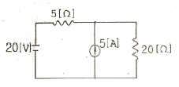
- 0.8A
- 1.0A
- 1.8A
- 2.8A
(정답률: 56%)
22. 유도등 선로의 절연저항을 측정하고자 할 때 사용하는 계기로 가장 알맞은 것은?
- 매거(MEGGER)
- 어스테스터(EARTH TESTER)
- C.R.O(CATHODE RAY OSCILLOSCOPE)
- 휘이트스토운 브리지(WHEATSTONE BRIDGE)
(정답률: 80%)
23. 분당 토출량 700ℓ/min, 양정 72m인 소화전 펌프에 사용되는 진동기의 용량은 최소 약 몇 [kW] 면 되겠는가? (단, 펌프효율은 0.6 이고, 전달계수는 1.1 이다.)
- 12kW
- 15kW
- 18kW
- 21kW
(정답률: 54%)
24. 그림과 같은 DIODE게이트 회로에서 출력전압은 몇 [V]인가? (단, 다이오드내의 전압강하는 무시한다.)
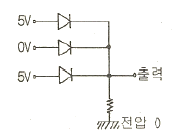
- 0V
- 1V
- 5V
- 10V
(정답률: 83%)
25. v=20√2sin(ωt+π/3)[V]를 복소수로 표시하면?
- 10(√3+j1)
- 10(1+j√3)
- 10+j5
- 10(1+j2)
(정답률: 62%)
26. 부하특성이 그림과 같을 때 소비전력량은 몇 [kWh] 인가?
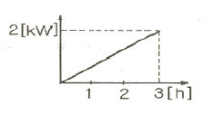
- 1.0kWh
- 1.5kWh
- 3.0kWh
- 6.0kWh
(정답률: 45%)
27. 그림과 같은 유접정회로의 논리식은?
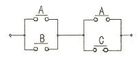
- AB +BC
- A+ BC
- B +AC
- AB + B
(정답률: 81%)
28. 회로시험기(Tester)로 직접 측정할 수 없는 것은?
- 저항
- 역률
- 전압
- 전류
(정답률: 83%)
29. 무효전력이 0(zero)이 되는 부하는?
- 용량리액턴스 부하
- 저항 부하
- 유도리액턴스 부하
- 용량리액턴스화 유도리액턴스호 구성된 부하
(정답률: 59%)
30. 측정기의 측정번위 확대를 위한 방법의 설명으로 옳지 않은 것은?
- 전류의 측정범위의 확대를 위하여 분류기를 사용하고, 전압의 측정범위 확대를 위하여 배율기를 사용한다.
- 분류기는 계기에 직렬로 배율기는 병렬로 접속한다.
- 측정기 내부 저항을 Ra, 분류기 저항을 Rs라 할 때 분류기의 배율은
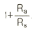
로 표시된다. - 측정기 내부 저항을 Rv, 분류기 저항을 Rm라 할 때 배율기의 배율은
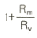
로 표시된다.
(정답률: 70%)
31. 저항 10Ω, 인덕턱스 20mH를 직렬로 연결한회로에 직류 전압 220V 를 인가한 경우 정상 상태에서 축척된 에너지는 몇 [J]인가?
- 0.484
- 4.84
- 0.968
- 9.68
(정답률: 54%)
32. 그림 기호와 같은 계기의 명칭으로 알맞은 것은?
- 주파수계
- 역률계
- 속도계
- 위치지시계
(정답률: 78%)
33. 아래와 같은 트랜지스터회로에서 베이스(B)와 이미터(E) 사이의 전압강하가 0.8V 이다. 이 때 베이스에 흐르는 전류는 약 몇 [μA] 인가?
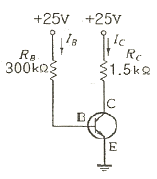
- 75
- 78
- 81
- 83
(정답률: 37%)
34. 다음 중 피드백제어계에서 반드시 필요한 장치는?
- 증폭도를 향상시키는 장치
- 응답속도를 개선시키는 장치
- 기어장치
- 압력과 출력을 비교하는 장치
(정답률: 82%)
35. SCR를 턴온시킨 후 게이트 전류를 0으로 하여도 온(ON)상태를 유지하기 위한 최소의 애노드 전류를 무엇이라 하는가?
- 래칭전류
- 스텐드온전류
- 최대전류
- 순시전류
(정답률: 78%)
36. 그림과 같은 오디오회로에서 스피커 저항이 8Ω이고 증폭기 회로의 저항이 288Ω 이다. 변압기의 권수비로 알맞은 것은?
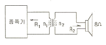
- 6
- 7
- 36
- 42
(정답률: 62%)
37. 다음 중 릴레이 자동복귀 a 접점에 해당 되는 것은?
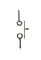
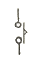
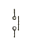
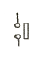
(정답률: 50%)
38. R-L 직렬회로의 시정수는? (단, R: 저항, L:인덕턱스, ω: 각주파수 이다.)
- L/R
- R-L
- R/L
- ωL/R
(정답률: 59%)
39. 그림과 같은 피드백 회로의 등가 합성 전달함수는?
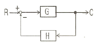
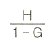
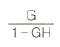
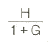
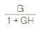
(정답률: 72%)
40. 플레잉의 왼손 법칙에서 중지의 방향은 무엇의 방향인가?
- 힘
- 자력선
- 전류
- 속도
(정답률: 64%)
3과목: 소방관계법규
41. 소방시설등의 자체점검과 관련하여 작동기능점검 결과의 자체보관 기간과 종합정밀점검 결과의 제출기간이 올바른 것은?
- 자체보관 1년, 제출기간 30일 이내
- 자체보관 2년, 제출기간 30일 이내
- 자체보관 3년, 제출기간 15일 이내
- 자체보관 3년, 제출기간 30일 이내
(정답률: 74%)
42. 다음 중 소방공사감리업자의 업무로 거리가 먼 것은?
- 당해 공사업 기술인력의 적법성 검토
- 피난ㆍ방화시설의 적법성 검토
- 실내장식물의 불연화 및 방염물품의 적법성 검토
- 소방시설등 설계변경 사항의 적합성 검토
(정답률: 52%)
43. 산화성 고체이며 제1류 위험물에 해당하는 것은?
- 황화린
- 칼륨
- 유기과산화물
- 염소산염류
(정답률: 76%)
44. 다음 중 화재경계지구의 지정대상지역과 가장 거리가 먼 것은?(오류 신고가 접수된 문제입니다. 반드시 정답과 해설을 확인하시기 바랍니다.)
- 목조건물이 밀집한 지역
- 시장지역
- 소방용수시설이 없는 지역
- 공장지역
(정답률: 32%)
45. 다음 중 건촉허가등의 동의대상물의 범위에 속하지 않는 것은?
- 관망탑
- 방송용 송ㆍ수신탑
- 항공기격납고
- 철탑
(정답률: 58%)
46. 항공기격납고는 특정소방대상물 중 어느 시설에 해당하는가?
- 위험물저장 및 처리시설
- 운수자동차관련시설
- 창고시설
- 업무시설
(정답률: 69%)
47. 다음 중 소방활동에 필요한 소화전ㆍ급수탕ㆍ저수조를 설치하고 유지ㆍ관리하여야 하는 자로 알맞은 것은? (단, 수도법에 따라 설치되는 소화전은 제외한다.)
- 소방파출소장
- 발화신호
- 소방본부장
- 시ㆍ도지사
(정답률: 68%)
48. 다음 중 화재 예방상 필요하다고 인정되거나 화재위험경보시 발령하는 소방신호의 종류로 맞는 것은?
- 경계신호
- 발화신호
- 경보신호
- 훈련신호
(정답률: 59%)
49. 소방대상물에 대한 개수(改修)명령권자는?
- 시ㆍ도지사
- 소방본부장 또는 소방서장
- 군수ㆍ구청장
- 소방시설관리사
(정답률: 67%)
50. 구조대원은 소방공무원으로서 소방방재청장ㆍ소방본부잘 또는 소방서장이 임명한다. 다음 중 구조대원의 자격으로 적합하지 않은 자는?
- 행정자치부령이 정하는 구조업무에 관한 교육을 받은 자
- 소방방재청장이 실시하는 인명구조사 교육을 수료하고 교육수료시험에 합격한 자
- 국가ㆍ지방자치단체ㆍ공공기관에서 구조관련 분야의 근무경력이 1년 이상인 자
- 응급위료에 관한 법률 제36조의 규정에 의하여 응급구조사의 자격을 취득한 자
(정답률: 59%)
51. 다음 중 화재조사전담부서의 설치ㆍ운영 등에 관련된 사항으로 바르지 못한 것은?
- 화재조사 전담부서에는 발굴용구, 기록용기기, 감시용기기, 조명기기, 그 밖의 장비를 갖추어야 한다.
- 화재조사에 관한 시험에 합격한 자에게 1년마다 전문보수교육을 실시하여야 한다.
- 화재의 원인과 피해조사를 위하여 소방방재청, 시ㆍ도의 소방본부화 소방서에 화재조사를 전담하는 부서를 설치ㆍ운영한다.
- 화재조사는 소화활동과 동시에 실시되어야 한다.
(정답률: 65%)
52. 방염대상물품에 대하여 방염처리를 하고자 하는 자는 어떤 절차를 거쳐야 하는가?
- 시ㆍ도지사에게 방염처리업의 등록
- 시ㆍ도지사에게 방염처리업의 허가
- 소방서장에게 방염처리업의 등록
- 소방서장에게 방염처리업의 허가
(정답률: 49%)
53. 산업안전기사 또는 산업안전산업기사 자격을 가진 자로서 몇 년 이상 방화관리에 관한 실무경력이 있는 경우 1급 방화관리대상물의 방화관리자로 선임할 수 있는가?
- 1년 이상
- 1년 6개월 이상
- 2년 이상
- 3년 이상
(정답률: 55%)
54. 함부로 버려 두거나 그냥 둔 위험물의 소유자ㆍ관리자 또는 점유자의 주소와 성명을 알 수 없어 필요한 명령을 할 수 없는 때에 소방본부장 또는 소방서방이 취하는 조치로 옳지 않은 것은?
- 소속공무원으로 하여금 그 위험물을 옮기거나 치우게 할 수 있다.
- 옮기거나 치운 위험물을 보관하여야 한다.
- 위험물을 보관하는 경우에는 그 날로부터 7일동안 소방본부 또는 소방서의 게시판에 이를 공고하여야 한다.
- 보관기간이 종료된 위험물이 부패ㆍ파손 또는 이와 유사한 사유로 소정의 용도에 계속 사용할 수 없는 경우에는 폐기할 수 있다.
(정답률: 56%)
55. 위험물시설의 설치 및 변경, 안전관리에 대한 설명으로 옳지 않은 것은?
- 제조소등의 설치자의 지위를 승계한 자는 승계한 날로부터 30일 이내에 시ㆍ도지사에세 신고하여야 한다.
- 제조소등의 용도를 폐지한 때에는 폐지할 날부터 30일 이내에 시ㆍ도지사에게 신고하여야 한다.
- 위험물안전관리자가 퇴직한 때에는 퇴직한 날로부터 30일이내에 다시 위험물안전관리자를 선임하여야 한다.
- 위험물안전관리자를 선임한 때에는 선임한 날부터 14일 이내에 소방본부장 또는 소방서장에게 신고 하여야 한다.
(정답률: 50%)
56. 특정소방대상물로 위락시설에 해당되지 않는 것은?
- 투전기업소
- 카지노업소
- 무도장
- 공연장
(정답률: 53%)
57. 다량의 위험물을 저장ㆍ취급하는 제조소등으로서 대통령령이 정하는 제조소등이 있는 동일한 사업소에서 대통령령이 정하는 수량 이상의 위험물을 저장 또는 취급하는 경우 당해 사업소의 관계인은 대통령령이 정하는 바에 따라 당해 사업소에 자체소방대를 설치하여야 한다. 여기서 “대통령령이 정하는 수량” 이라 함은 지정수량의 몇 배를 말하는가?
- 2천배
- 3천배
- 4천배
- 5천배
(정답률: 50%)
58. 저장소 또는 제조소 등이 아닌 장소에서 지정수량 이상의 위험물을 저장 또는 취급한 자에 대한 벌칙은?
- 1년 이하 징역 또는 1천만원 이하의 벌금
- 2년 이하 징역 또는 1천만원 이하의 벌금
- 1년 이하 징역 또는 2천만원 이하의 벌금
- 2년 이하 징역 또는 2천만원 이하의 벌금
(정답률: 68%)
59. 다음 중 소방시설검사의 하자보수 보증에 대한 사항으로 맞지 않은 것은?
- 스프링클러설비, 자동화재탐지설비의 하자보수 보증기간은 3년이다.
- 계약금액이 300만원 이상인 소방시설 등의 공사를 하는 경우 하자보수의 이행을 보증하는 증서를 예치하여야 한다.
- 금융기관에 예치하는 하자보수보증금은 소방시설공사금액의 100분의 3 이상으로 한다.
- 관계인으로부터 소방시설의 하자발생을 통보받은 공사업자는 3일 이내에 이를 보수하거나 보수일정을 기록한 하자보수계획을 관계인에게 서면으로 알려야 한다.
(정답률: 48%)
60. 소방시설의 종류에 대한 설명으로 옳은 것은?
- 소화기구, 옥외소화전설비는 소화설비에 해당 된다.
- 유도등, 비상조명등은 경보설비에 해당 된다.
- 소화수조, 저수조는 소화활동설비에 해당 된다.
- 연결송수관설비는 소화용수설비에 해당 된다.
(정답률: 59%)
4과목: 소방전기시설의 구조 및 원리
61. 다음 중 자동화재탐지설비와 연동으로 작동하여 자동적으로 화재발생 상황을 소방관서에 전달하는 것은?
- 비상경보설비
- 자동화재속보설비
- 비상방송설비
- 무선통신보조설비
(정답률: 71%)
62. 지하층으로서 소방대상물의 바닥부분 2면 이상이 비표면과 동일하거나 지표면으로부터의 깊이가 몇 [m] 이하인 경우에는 해당 층에 한하여 무선통신보조설비를 설치하지않을 수 있는가?
- 0.5m
- 1.0m
- 1.5m
- 2.0m
(정답률: 67%)
63. 다음 중 정온식 감지선형 감지기의 설치기준으로 옳지 않은 것은?
- 감지선이 늘어지지 않도록 설치할 것
- 감지기의 굴곡반경은 5mm 이상으로 할 것
- 지하구나 창고의 천장 등에 지지물이 적당하지 않는장소에서는 보조선을 설치하고 그 보조선에 설치할 것
- 케이트 트레이에 감지기를 설치하는 경우 케이블트레이 받침대에 마감 금구를 사용하여 설치할 것
(정답률: 60%)
64. 다음 중 비상방송설비의 음향장치 설치기준으로 옳지 않은 것은?
- 음량조정기를 설치하는 경우 음량조정기의 배선은 3선식으로 할 것
- 다른 방송설비와 공용하는 것이 있어서는 화재시 비상경보외의 방송을 차단할 수 있는 구조로 할 것
- 기동장치에 따른 화재신고를 수신한 경우에는 20초이내에 자동으로 필요한 음량으로 화재발생 상황 및 피난에 유효한 방송을 개시할 것
- 조작부는 기동장치의 작동과 연동하여 당해 기동장치가 작동한 층 또는 구역을 표시할 수 있는 것으로 할 것
(정답률: 77%)
65. 다음 중 무선통신보조설비의 화재안전기준에서 사용하는 용어의 정의로 올바른 것은?
- “분파기” 는 신호의 전송로가 분기되는 장소에 설치하는 장치를 말한다.
- “분배기” 는 서로 다른 주파수의 합성된 신호를 분리하기 위해서 사용하는 장치를 말한다.
- “누설동축케이블” 은 동축케이블 외부도체에 가느다란 홈을 만들어서 전파가 외부로 새어나갈 수 있도록 한 케이블을 말한다.
- “증폭기” 는 두개 이상의 입력 신호를 원하는 비율로 조합한 출력이 발생되도록 하는 장치를 말한다.
(정답률: 66%)
66. 다음 중 자동화재탐지설비의 발신기 스위치의 설치 위치로 알맞은 것은?
- 바닥으로부터 30cm 높이인 위치
- 바닥으로부터 75cm 높이인 위치
- 바닥으로부터 120cm 높이인 위치
- 바닥으로부터 160cm 높이인 위치
(정답률: 71%)
67. 3선식 배선에 따라 상시 충전되는 유도등의 전기회로에 점멸기를 설치하여 소등상태를 유지하는 경우 다음 중 자동적으로 점등되어야 하는 조건에 속하지 않는 것은?
- 자동화재탐지설비의 발신기가 작동되는 때
- 비상방송설비의 발신기가 작동되는 때
- 자동소화설비가 작동되는 때
- 비상경보설비의 발신기가 작동되는 때
(정답률: 42%)
68. 다음 중 비상콘센트설비의 설치 기준으로 옳지 않은 것은?
- 개폐기에는 “비상콘센트”라고 표시한 표지를 할 것
- 비상전원은 비상콘센트설비를 유효하게 10분 이상 작동시킬 수 있는 용량으로 할 것
- 하나의 전용회로에 설치하는 비상콘센트는 10개 이하로 할 것
- 비상전원을 실내에 설치하는 때에는 그 실내에 비상조명등을 설치할것
(정답률: 72%)
69. 공기관식 차동식분포형감지기의 설치기준으로 옳지 않은 것은?
- 공기관의 노출부분은 감지구역마다 20m 이상이 되도록 할 것
- 공기관과 감지구역의 각변과의 수평거리는 1.5m 이하가 되도록 할 것
- 하나의 검출부에 접속하는 공기관의 길이는 100m 이하로 할 것
- 검출부는 45˚ 이상 경사지지 않도록 부착할 것
(정답률: 59%)
70. 다음 ( )에 알맞은 것은?
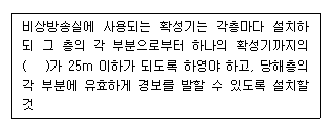
- 수평거리
- 수직거리
- 직통거리
- 보행거리
(정답률: 78%)
71. 휴대용 비상조명등 설치기준으로 옳지 않은 것은?
- 숙박시설 또는 다중이용업소에는 객실 또는 영업장안의 구획된 실마다 잘 보이는 곳에 1개 이상 설치
- 백화점ㆍ대형점ㆍ쇼핑센타 및 영화상영관에는 보행거리 25m 이내마다 3개 이상 설치
- 설치높이는 바닥으로부터 0.8m 이상 1.5m 이하의 높이에 설치
- 건전지를 사용하는 경우에는 방전방지조치를 하여야 하고, 충전식 밧데리의 경우에는 상시충전되도록 할 것
(정답률: 68%)
72. 소방시설용비상전원수전설비에서 소방회로 및 일반회로 겸용의 것으로서 분기개폐기, 분기관전류차단기 그 밖의 배선용기기 및 배선을 금속제 외함에 수납한 것으로 정의 되는 것은?
- 전용배전반
- 공용배전반
- 전용분전반
- 공용분전반
(정답률: 43%)
73. 누전경보기의 전원은 분전반으로부터 전용회로로 하고 각극에 개폐기와 몇 [A] 이하의 과전류 차단기를 설치 하여야 하는가?
- 15A
- 20A
- 25A
- 30A
(정답률: 68%)
74. 바닥면적이 450m2 일 경우 단독경보형감지기의 최소 설치 개수는?
- 1개
- 2개
- 3개
- 4개
(정답률: 74%)
75. 부착높이 20M 이상에 설치되는 광전식 아날로그방식의 감지기는 공칭감지농도 하한값이 감광율 몇 [%/m] 미만인 것으로 하여야 하는가?
- 1%/m
- 3%/m
- 5%/m
- 7%/m
(정답률: 52%)
76. 다음 중 감지기의 설치 기준에 맞지 않는 것은?
- 감지기는 천장 또는 반자의 옥내에 면하는 부분에 설치 할 것
- 차동식분포형의 것을 제외하고 감지기는 실내로의 공기 유입구로부터 1.5m이상 떨어진 위치에 설치할 것
- 정온식감지기는 주방ㆍ보일러실등으로서 다량의 화기를 취급하는 장소에 공칭작동온도가 주위온도보다 20℃이상 높은 것으로 설치할 것
- 스포트형감지기는 45˚ 이상 경사되지 아니하도록 부착 할 것
(정답률: 35%)
77. 무창층의 도매시장에 설치하는 비상조명등용 비상전원은 당해 비상조명등을 몇 분 이상 유효하게 작동시킬 수 있는 용량으로 하여야 하는가?
- 10분 이상
- 20분 이상
- 40분 이상
- 60분 이상
(정답률: 63%)
78. 비상콘센트설비의 전원회로가 단상교류 100V 또는 220V일 경우 공급용량은 몇 [kVA] 이상 이어야 하는가?
- 0.5kVA 이상
- 1.0kVA 이상
- 1.5kVA 이상
- 3.0kVA 이상
(정답률: 73%)
79. 피난구 또는 피난경로로 사용되는 출입구를 표시하여 피난을 유도하는 표지는?
- 피난구유도등
- 통로유도등
- 피난구유도표지
- 통로유도표지
(정답률: 64%)
80. 거실의 각 부분으로부터 하나의 출입구에 이르는 보행거리가 몇 [m] 이내인 부분에는 비상조명등을 설치하지 않을 수 있는가?
- 15m
- 2 0m
- 30m
- 40m
(정답률: 50%)